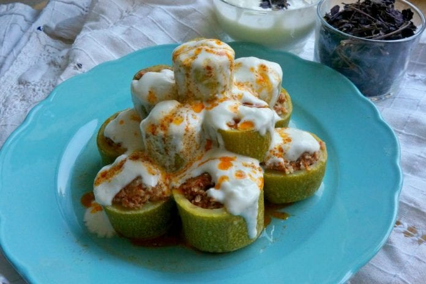
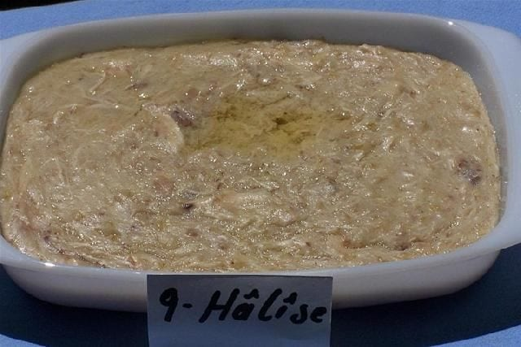
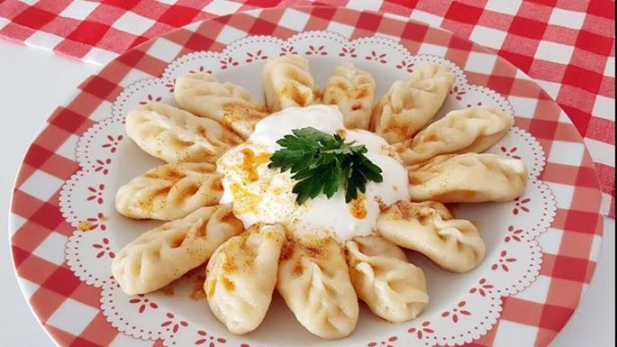

Büryan Bitlis ve Siirt’in ortak olarak sahiplendiği sadece yörede yiyebileceğiniz enfes bir lezzettir. Onu bu kadar özel kılan ise yöre halkının evlerinde bulunan tandırlarda pişiyor olmasıdır. Restoranlarda yediğiniz kebaplara benzer bir tüketim şekli olduğu söylenebilir. Büryan deneyimini yaşamak için yöre halkının evine konuk olabilirsiniz. Genellikle Ramazan aylarında yapılsa da yılın diğer dönemlerinde de sofralarda görmek mümkündür.
Büryanı bu kadar özel kılan başka bir husus da kuzu etidir. Kuzu etinin tandırda pişmesi ile birlikte sonrasında yine tandırda pişen ekmeğin üzerine servis edilmesi ile sunulur. Tandırda pişmiş bir kuzu eti ile evlerinizde pişirdiğiniz kuzu eti arasında lezzet bağlamında büyük farklar bulabilirsiniz. Büryan deneyimini her yerde yaşayamayacağınızın da altını çizelim. Büryan yöre halkının ve turistlerin severek tükettiği tek porsiyonda insanı doyuran bir yemektir.
- Nerede Yenir: Bitlis Büryan Salonu
- Fiyat Aralığı: Orta Seviye
Çorti Aşı
Corti aşı, Bitlis’in akşam yemeklerinde en çok görebileceğiniz ana yemeklerinden biridir. Yöre halkı tarafından çok sevilen bu yemek mutlaka kemikli et ile yapılır. Kemiğin yemeklere lezzet kattığı fikri Anadolu kültüründe tartışmasız kabul edilen gerçeklerden biridir. Corti aşı da kemikli et ile pişirilen yemeklerden biri.
Yöre halkı bu yemeğin kıvamını koyu yaptığı zaman ana yemek, duru yaptığı zaman çorba olarak tüketiyor. Bu yüzden de turistler tarafından bir hayli ilginç karşılanıyor. Kemikli et, buğday benzeri besinler ile hazırlanan bu yemeği akşam yemeklerinde sıkça menüde görebilirsiniz. Ancak yemeği çorba olarak mı yoksa yemek olarak mı göreceğiniz tamamen pişiren aşçının inisiyatifine kalmış. Unutmadan, corti aşı nane ile süslendiğinde çok daha leziz oluyor.
- Nerede Yenir: Çoğunlukla evlerde yapılan corti aşı yemeğinin tarifini alarak sizler de evlerinizde yapabilirsiniz.

Katıklı Dolma
Kabak ve dolma severlerin vazgeçemediği bir Bitlis klasiği de katıklı dolmadır. Katıklı dolmayı denemeden önce mutlaka usta birinin ellerinden yediğinize emin olun. Kabak dolmasının bu kadar leziz olduğuna inanamayacaksınız. Kabakların halka halka kesilmesi ve içleri boşaltılarak harç ile doldurulması ile hazırlanan tadı enfes bir lezzettir. Bir oturuşta iki kabaklık dolma yiyebilirsiniz.
Katıklı dolma deneyimini taçlandıran en büyük şey de salçalı yoğurtlu sosudur. Sarımsaklı yoğurdun yakışmadığı nadir yemek bulunur. Katıklı dolma da sarımsaklı yoğurt ve baharatlı salçalı sos ile çok yakışan lezzetler arasında yer alıyor. İç harcının hazırlanmasından tutun da tencerede pişirilmesine kadar katıklı dolma tam bir yöresel lezzet kıvamına sahiptir.
- Nerede Yenir: Çoğunlukla evlerde yapılan corti aşı yemeğinin tarifini alarak sizler de evlerinizde yapabilirsiniz.

Halise Yemeği
Halise yemeği, Bitlis’in en doyurucu yemekleri arasında yer alıyor. Bu yemeğin görünüşü ile biraz keşkek benzeri bir hale sahiptir. Tat olarak ise keşkekten fazlası ile farklıdır. Halise yemeği yapılırken içerisine aşurelik buğday, nohut ve yemeklerin olmazsa olmazı et eklenir. Lezzeti bu kadar eşsiz yapan ise sonradan üzerine eklenen doğal eritilmiş tereyağıdır.
Oldukça doyurucu bir besin olarak görülen halise yemeği bazı akşamlar yöre halkı tarafından tek başına pişirilir. Yemeğin bir hayli doyurucu olması insanların yanında başka besinler tüketmek istememesine neden oluyor. Halise yemeğini en iyi hali ile deneyimleyebileceğiniz yer ise tabi ki yöre halkının evidir. Akşam yemeklerini tek başına idare edebilen bu doyurucu besini sakin görüntüsüne bakarak yargılamayın. Tadı gerçek anlamda yöresel ve lezzetlidir.
- Nerede Yenir: Çoğunlukla evlerde yapılan corti aşı yemeğinin tarifini alarak sizler de evlerinizde yapabilirsiniz.

Ciğer Taplaması
Ciğer taplaması Bitlis’in et yemekleri arasında namı en çok duyulanlardan biridir. Özellikle ciğer severlerin dayanamadığı bir yemek olduğunu söylemek yanlış olmaz. Ciğer taplaması hakkında pek bilinmeyen bir şey de içinde köftelik bulgur kullanılıyor olmasıdır. Yanında ise en çok pirinç pilavı tüketiliyor.
Bitlis’te ciğer patlaması yapılırken mutlaka koyun ciğeri kullanılır. Koyun ciğerinin pişirilmesi de yine yöresel bir şekilde gerçekleşir. Hem tadı hem de görüntüsü ile yöresel lezzet severlerin ağzını sulandıran bir yemektir. İnsanın yedikçe yiyesi gelen türden bir lezzet olarak ifade edilebilir. Üstelik bulması da bir hayli kolaydır. Bitlis içerisinde yer alan restoranların çoğunda ciğer taplaması menülerden eksik olmayan bir lezzet olarak bulunur. Yolunuz Bitlis’e düşerse denemeden geçmeyin. Şimdiden afiyet olsun.
- Nerede Yenir: Çoğunlukla evlerde yapılan corti aşı yemeğinin tarifini alarak sizler de evlerinizde yapabilirsiniz.

Metez
Hamurun küçücük parçalar halinde açılarak içine hazırlanan patetes harcının bırakılmasıyla suda haşlanarak yapılan yemektir... Üzerine ocakda kaynatılmış biber ve yağ dökülerek ayran ile birlikde servise sunulur...
- Nerede Yenir: Çoğunlukla evlerde yapılan corti aşı yemeğinin tarifini alarak sizler de evlerinizde yapabilirsiniz.